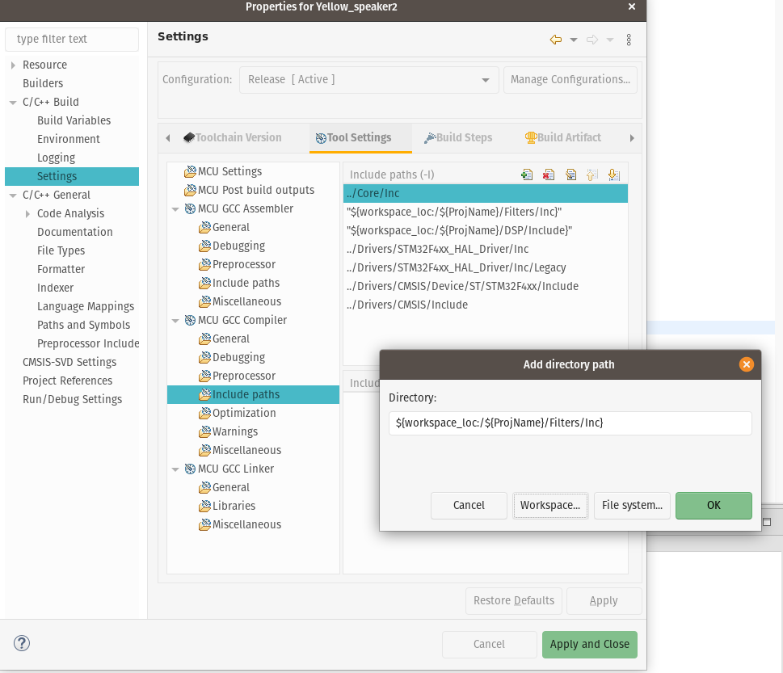
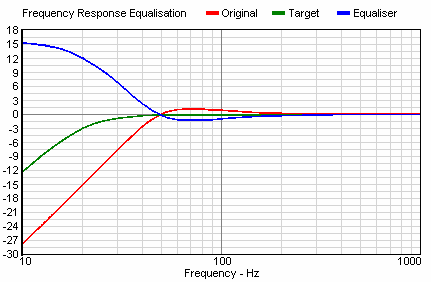

On the bench is the latest board I developed: a compact STM32F4 loudspeaker processor with its converters, connectors and a mains transformer. The global chip shortage has stalled it a bit, but the software side is ready. This is the round-up of how I got there.
Let me write a round-up of this research on using an MCU as a speaker processor.
By this time I had switched from KEIL MDK to STM32CubeIDE, which at this moment (November 2021) seems to be the weapon of choice for most ST developers.
Getting the DSP library in
Again, for future reference, a quick how-to on including a maths/DSP library.
Together with your IDE installation, you will have installed some repositories for ARM software products. You are looking for the CMSIS/DSP libraries. The path will be something like /STM32Cube/Repository/STM32Cube_FW_F4_V1.25.2/Drivers/CMSIS/DSP/ in your home directory on Linux. It will be similar on macOS or Windooz.

Start a new project in the IDE, right-click the project name and choose Create new source folder. Name it DSP. Then right-click again, select Import file system, and select both the source (source) and header (include) files from the repository. Click Finish.
Now you have both the source and header files in your project, but the compiler knows nothing about them. Right-click the project, open the project properties, find the compiler include path settings and add the new path. Check the screenshot.


Now you can include all those nice ARM DSP tricks with #include "arm_math.h". Try to build — embedded speak for compile — and you will get hundreds of errors. If you check the first ones, you will see that the compiler needs two preprocessor directives. Find them in the properties and add both: ARM_MATH_CM4 (we are using an M4 core) and __FPU_PRESENT = 1U (yes, we do have a floating-point doohickey in our processor). Oh, and that's two underscores: __.
Now you can start programming your code using block processing, taking chunks of, say, 48 samples, and using the increased efficiency of the CMSIS libraries. Check all those filtering functions!
The low-frequency trick
There is loads to discover, but let me disclose this one.
Decades ago I met Ed Long — yup, the guy who 'invented' time alignment — at a pro-audio trade fair. He demonstrated his closed-box, single 15-inch sub. It was astounding, as was the excursion. His trick was to use electronics branded as ELF and not filters to EQ the sub.
Much later, Linkwitz developed a filtering method known as the Linkwitz Transform, a similar way to correct the response of a subwoofer.


I never got any good results with this method, because professional DSPs don't provide a way to import your own biquad coefficients. And using shelving filters and EQ will never have the required precision.
While using this CMSIS library function:
| void | arm_biquad_cas_df1_32x64_q31 (const arm_biquad_cas_df1_32x64_ins_q31 *S, const q31_t *pSrc, q31_t *pDst, uint32_t blockSize) |
| Processing function for the Q31 Biquad cascade 32x64 filter. |
I managed to reproduce that sensation I had at that trade fair decades ago. Thanks, Ed!
Do understand that you really, really need the above precision in fixed point to get decent results. If you are into the math: understand how a biquad calculation works and how the representation of coefficients (all close to the unity circle) affects the calculations at very low frequencies.
(Anyone remember we at some point — 2010? — got this 'use for better LF response' checkbox in London Architect?)
The latest board
→ Oh, and this is the latest board I developed, everything being stalled a bit by the global chip shortage: